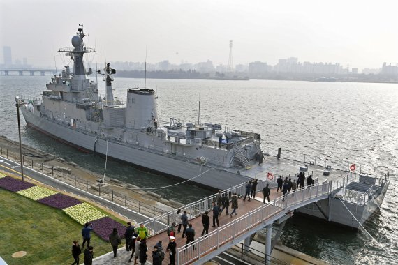
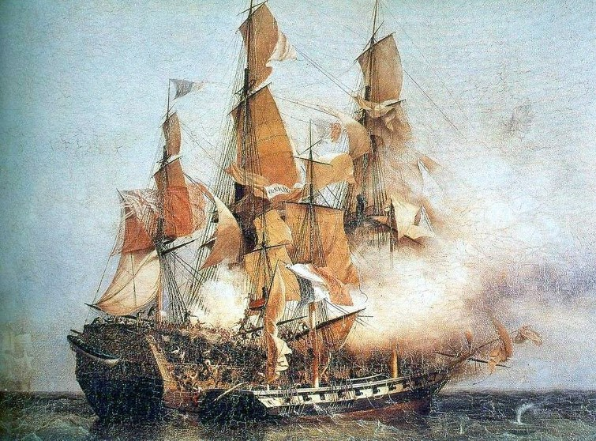
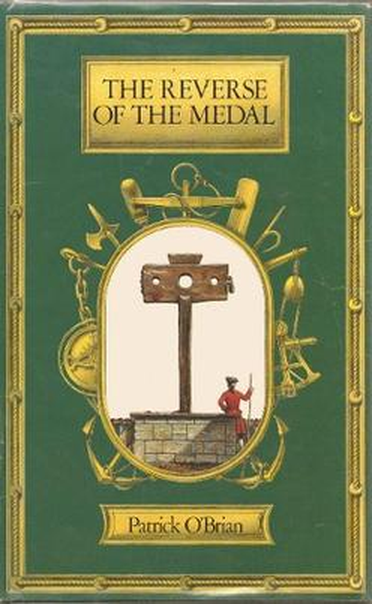
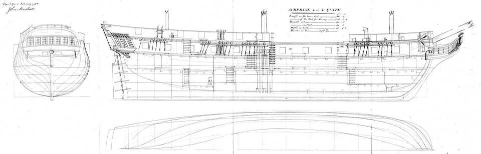
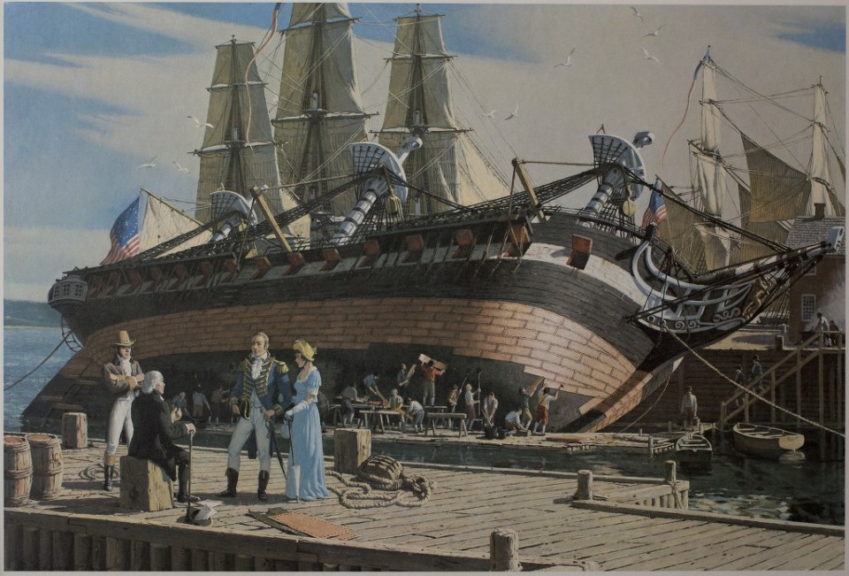

나폴레옹 시대, 중고 프리깃함 가격은 어느 정도였을까 ?
게시: 2018-08-16T06:30:00+09:00
최근에 흥미로운 보험 사기 관련 뉴스가 있었습니다. 길이 100m가 넘는 4천톤급 원양어선에 보험금을 노리고 일부러 화재를 일으킨 뒤, 보험금으로 무려 60억원이 넘는 돈을 받아냈다는 것이었지요. (https://news.v.daum.net/v/20180809072704748 참조) 거기서 저의 마음을 가장 설레게 했던 것은 애초에 그런 큰 배를 구입하는데 들었던 금액이었습니다. 19억원이더라구요. 비록 낡은 중고어선이라서 많이 내려간 가격이긴 했지만, 그 정도면 서울에 있는 좋은 동네 넓은 아파트 가격이쟎아요 ? 저는 그런 큰 배는 가격이 엄청나게 높아서, 일반인은 꿈도 꿀 수 없는 것이라고 생각했었는데, 저 정도면 물론 큰 액수이긴 하지만 로또 한방이면 가능한 금액이라는 점에 마음이 설렜습니다.
길이 100m 정도의 선박이면 크기가 어떨지 궁금해하시는 분들께서는 망원동 쪽에 정박해서 이젠 공원이 되어 있는 서울함을 참조하시면 되겠습니다. 서울함은 1985년에 취역하여 30년 사용하다가 퇴역한 울산급 호위함인데, 길이가 100m 정도입니다. 다만 저 원양어선처럼 뚱뚱하지 않고 군함답게 날씬하여 배수량은 약 1500톤 급이라고 하네요.

(망원동 쪽에 있는 서울함 공원입니다. 3천원인가... 유료입장이긴 한데, 꽤 괜찮습니다.)
이왕 돈 써서 선주가 되는 김에, 시시한 어선 말고 날렵한 군함을 구매해서 대양을 항해하는 자신의 모습을 상상해보신 적이 있으신가요 ? 현대에 퇴역 군함으로 대체 뭘 해야 수익을 낼 수 있을지가 걱정이시라면 저도 드릴 말씀이 없습니다만, 제 블로그의 주제인 나폴레옹 전쟁 당시라면 매우 수지 맞는 장사가 있긴 했습니다. 바로 사략선(privateer)입니다.
사략선은 해적(pirate)과는 확실히 구분되는, 일종의 민간 해군이라고 보시면 됩니다. 사략선은 전시에 소속 국가로부터 면허장(letter of marque)을 받아서 합법적으로 적대국의 선박을 공격하여 노획하는 역할을 하는 선박입니다. 일반 군함과 다른 점은 다음과 같습니다.
- 함장을 비롯하여 모든 선원은 민간인입니다. 그러나 해적과는 달리 일반적인 통상적인 교전 수칙을 다 지켜야 했습니다. 가령 탈취한 선박의 민간인, 특히 여성의 안전은 절대 보장해야 했습니다.
- 합법적으로 교전할 수 있는 선박은 면허장(letter of marque)에 표기된 국가 소속의 민간 및 군용 선박입니다. 만약 교전국이 여러 국가라고 하면, 반드시 면허장을 그 해당 국가별로 다 따로 받아야 합니다. 가령 덴마크가 프랑스의 동맹국이자 영국의 적국이라고 해도, 프랑스와 네덜란드에 대한 면허장 2장만 있다고 하면 절대 공격해서는 안 됩니다.
- 사략선의 주목적은 노획품이었습니다. 따라서 적함의 격침보다는 탈취가 목표였고, 그러기 위해서는 무엇보다 배가 빨라야 했고 또 승선 공격을 할 수 있도록 많은 수의 전투원을 태울 수 있어야 했습니다. 그러다보니 대부분의 사략선은 대포 무장이 빈약한 작은 배였습니다. 이런 작은 배들이 자신의 2배 정도 크고 대포 수도 더 많은 인도 무역선(Indiaman)에 겁도 없이 덤벼들곤 했습니다.
- 원래 목적도 그랬고 또 무장이 빈약했으므로 사략선은 상선을 만나면 공격하고 적 군함을 만나면 빠른 속력을 이용해 도망쳤습니다.

(동인도 회사 소속 켄트 Kent 호를 공격 중인 프랑스 사략선 콩피앙스 Confiance 호의 모습입니다. 이 사건은 1800년에 있었는데, 저 그림 속에서 작은 배가 콩피앙스입니다. 저 켄트 호는 무려 40문의 대포를 장착한 무장 상선이었고, 특히 화재가 발생한 다른 배의 승객들을 구출해서 태우고 있었기 때문에 무려 300명의 군인을 포함한 437명의 인원을 태우고 있었습니다. 그에 비해서 콩피앙스 호는 15문의 대포에 고작 150명의 선원을 태우고 있을 뿐이었지요. 그런데도 1시간 반의 전투 끝에 콩피앙스 호는 켄트 호를 나포하는데 성공합니다. 이때 나포 이후 1시간의 약탈이 허락되었는데 여성 승객들은 엄격하게 보호될 정도로, 프랑스 민간 사략선들은 해적과는 달리 신사도를 갖추고 있었습니다. 이 사건에 충격을 받은 영국 해군성은 이 콩피앙스 호의 선장 로베르 쉬르쿠 Robert Surcouf 에게 현상금을 걸기도 했습니다. 쉬르쿠는 1809년 현역에서 은퇴하기 전까지 무려 40 척을 나포하는 활약을 했는데, 이후에는 다른 사략선을 무장시켜 내보내는 선주로서 또 많은 돈을 벌어들였습니다. 영국 해군성의 기대와는 달리 그는 레종 도뇌르 훈장을 받는 등 명예롭게 살다가 1827년 노르망디에서 평온하게 세상을 떠났습니다.)
이런 사략선을 바다에 띄우는 것은 매우 위험이 큰 사업이었습니다. 따라서 돈 많은 상인들이 돈을 대서 배와 장비를 사들이고 유능한 선장과 선원들을 고용하여 사략선을 띄웠습니다. 이런 사략선에 가장 좋은 배는 원래 군용으로 제작되었다가 오랜 취역 생활 후 낡아서 퇴역한 작은 슬룹(sloop) 함이었습니다. 속도가 빠른데다 군함 특성상 전투원들을 많이 태우기도 좋았고, 무엇보다 낡은 중고 선박이라서 유사시 역으로 탈취 당하거나 침몰하더라도 새 배를 잃는 것보다는 손해가 덜 했기 때문이었습니다. 이렇게 사략선 사업을 하려면 돈이 대략 얼마나 들었을까요 ?

The Reverse of the Medal by Patrick O'Brian (배경 : 1812년 영국 ) --------------
(주인공인 영국 해군 함장 잭 오브리가 증권시세 조작 사건에 휘말려 재판을 받게 됩니다. 이 재판에서 유죄로 판결을 받을 경우 돈도 잃지만 무엇보다 해군에서 불명예 전역을 할 위험에 처하게 됩니다. 그의 절친인 군의관 스티븐 머투어린은 잭이 유죄 판결을 받을 경우에 대비해 잭과 자신이 오랫동안 함께 근무했다가 이제 퇴역하는 영국 해군 소속 낡은 프리깃함인 HMS Surprise를 자신의 돈으로 매입하여 사략선으로 만들 생각을 합니다. 최근 스티븐의 스페인 귀족 대부가 사망하면서, 그에게 엄청난 규모의 금화를 유산으로 남겼거든요. 그에 대해 해군성 관료인 조셉 블레인 경과 스티븐이 대화를 나눕니다.)
마침내 스티븐이 침묵을 깨고 말했다. "여기 오면서 유죄 판결의 경우 내가 뭘 할 수 있을까를 생각해보았습니다. 잭 오브리는 해군에서 퇴출당할 경우 정신줄을 놓고 폐인이 될 겁니다. 저도 영국에 남아 있고 싶은 생각이 없고요. 그러니 제가 대신 서프라이즈 호를 구입해서 - 잭의 금전 상황이 어렵게 되었으니까요 - 사략선 면허장을 받고 선원들을 계약해서 사략선으로 출항시킬까 생각합니다. 잭을 그 선장으로 해서요. 그에 대해 생각해보신 뒤 내일 제게 조언을 주십사 간청드려도 될까요 ?"
"물론 이지요. 일단은 매우 훌륭한 계획이라고 말하고 싶습니다. 보직을 얻지 못한 해군 장교들 여럿도 그렇게 사략선에 자리를 얻어서 자신들의 전쟁을 계속 하면서 가끔씩 적의 통상로에 아주 난리를 일으킴과 동시에 큰 수익도 올리고 있지요. 떠나신다고요 ?"
(중략...)
"그리고 마지막으로 당신이 영국 내에 필요한 자금을 가지고 계시리라 믿습니다. 이런 거래에서는 당장 준비된 자금이 필요하거든요. 만약 없으시다면..."
"있습니다. 군함을 사서 장비를 갖추는데 비용이 얼마나 드는지 모르겠습니다만, '성령과 통상 은행'(the Bank of the Holy Ghost and of Commerce)에서 발행한 쓰레드니들 가(Threadneedle Street - 영국 금융기관이 밀집한 거리의 이름)의 어음 3장이 있습니다." 스티븐은 그 중 한 장을 건네면서 말했다. "만약 이것들로 부족하다면 더 가져올 수 있습니다."
(나폴레옹 전쟁 당시는 물론, 지금도 런던의 금융기관이 몰려 있는 지역을 'The City'라고 부릅니다. 사진 속에 보이는 Threadneedle 거리는 그 City에 속한 거리 이름으로서 지금도 많은 금융기관이 있습니다.)
"맙소사, 머투어린." 조셉 경이 말했다. "이거 하나로도 내구 연한이 지난(past mark of mouth) 소형 중고 프리깃함은 말할 것도 없이 74문짜리 신규 전열함을 건조하고 선원과 장비를 갖출 수 있겠소."
"서프라이즈 호는 선수 돛을 좀 특별히 달면 정말 민첩하게 내달립니다. 그리고 그 냄새와 낮은 천정, 하갑판의 좁은 공간에 다들 결국 익숙해지게 되어 있습니다."
"그 배는 아주 멋진 사략선이 될 겁니다. 서프라이즈호를 뿌리칠 정도로 빠르거나 화력 대결을 벌여 이길 정도로 중무장한 상선은 많지 않지요. 하지만 이미 아시다시피 먼저 사략 먼허장을 받아야 합니다. 그게 없으면 그냥 해적이 되는 것이지요. 그리고 우리가 교전국인 국가들 하나하나에 대해 각각 면허장을 받아야 합니다. 제 친구들 중 하나는 프랑스 선박에 대한 면허장만 가지고 있었는데도 전쟁 초기에 네덜란드 선박을 하나 나포했었습니다. 돌아오는 길에 만난 눈치 빠른 영국 해군 함정 하나가 그의 면허장을 보고는 나포된 네덜란드 선박을 몰수하고, 그것도 모자라 그의 선원들 중 절반을 강제 징발(press)하여 해군에 입대시켰지요. 하지만 제게도 아직 해군성 한 구석에 영향력이 좀 있으니 지구상에 존재하는 모든 적대국에 대한 면허장을 오늘 오후에 받도록 해드리겠습니다. 그런데 아까 말했지만, 서프라이즈 호에 대한 경매가 잭 오브리 함장의 공판 바로 하루 전으로 정해졌답니다. 그게 당신에게 어떤 문제가 될까요 ?"

(HMS Surprise는 실제로 존재했던 군함입니다. 원래 프랑스 해군이 1793년에 건조한 32문짜리 위니떼(Unité) 호였는데, 1796년 영국이 나포한 뒤 36문짜리 HMS Surprise로 바뀌었습니다.)
(중략 ...)
조셉 경이 말했다. "토마스 풀링스라면, 오브리 함장의 선임 부관으로 근무하다가 최근에 준함장(commander)으로 승진한 그 장교를 말씀하시는 거지요 ?"
"바로 그 사람입니다. 그 친구 말로는 (비록 함장으로 승진했지만) 자신이 해군 함정을 배정받아 출격할 가능성은 이미 매우 낮은데, 만약 오브리 함장이 유죄 판결을 받을 경우 그 가능성은 더더욱 낮아진다고 하더군요. 정말 그런가요 ?"
"안 됐지만 그럴 겁니다. 아무 배경이 없는 준함장이, 더군다나 불명예 전역한 정규 함장과 해군 생활을 했다고 하면, 아무리 그 불명예가 누명에 불과하다고 해도 남은 여생을 육지에서 보내게 될 가능성이 매우 높습니다. 그의 재주가 아무리 뛰어나더라도요."
"그렇다면 서프라이즈 호를 매입해서 정비하는 것을 도와주겠다는 그의 제안을 제가 받아들인다고 해서 제 양심이 찔릴 이유는 없겠군요 ?"
"예, 그럴 필요 없습니다. 정말 아주 잘 되었군요 ! 실은 저도 경매 현장에서 당신을 도와줄 경험있는 뱃사람을 소개해줘야 한다고 생각하고 있었거든요. 그렇지 않을 경우 철저히 사기를 당해서 서프라이즈 호는 뱃바닥의 구리판을 다 뜯기고 아예 진흙뻘에나 어울리는 평저선으로 개조될 지도 모릅니다. 하지만 풀링스가 모든 면에서 훨씬 더 뛰어난 사람입니다."
(중략 ... 항구에서 머투어린은 마침 정박해 있는 유러디시 호의 함장이자 오브리의 친구인 던다스 함장의 면회를 요청합니다.)
던다스는 그의 함장실에서 사복 차림으로 허겁지겁 뛰어나와 외쳤다. "오 세상에 머투어린, 제가 늦은 것이, 딱 5분 늦은 것이 얼마나 기쁜지 모르겠습니다. 마침 시내로 나가기 직전이었거든요."
그는 머투어린을 그의 선실로 안내하고 걱정스럽게 잭 오브리의 안부에 대해 물었다. 던다스는 걱정하는 머투어린에게 해군 관례인 허위 복무 기록(false muster)에 대한 오브리의 문제는 전혀 무관한 내용이니 걱정말라고 안심시키고는 이 공판에 대해 머투어린의 예상은 어떤지 물었다. 민간인의 관점에서 정말 위험한 재판이 될 것이라고 보는지 ?
"제3자 관점에서 보면 유죄 판결을 받을 이유가 없다고 생각합니다. 하지만 고문의 얼굴을 보고 정치적으로 연루된 재판이 과거에 어떻게 진행되었는지를 돌이켜 보면, 저는 그 재판 결과가 걱정스럽습니다. 제가 공판에 참석하지 못하고 서프라이즈 호 경매에 참석하러 가는 길이라 더욱 그래요."
"당신이요 ? 맙소사 !" 던다스는 놀라 외쳤다. 그는 스티븐을 의심스럽다는 듯이 쳐다보며 말했다. "하지만 아시다시피 서프라이즈 호는 값이 꽤 나갈 겁니다... 민간용 군함이니 가격이 정말 높을텐데요."
"해군성의 높은 분도 그렇게 말씀하시더군요. 하지만 그래도 감당할 수 있을 것 같습니다. 그 배를 셀머스턴 항구로 옮겨갈 수 있도록 선원 한두 명을 좀 빌려줄 수 있으실런지요 ? 빌려주시는 선원들은 본덴 및 제 하인과 함께 합승마차를 타고 오면 됩니다. 그 동안에 저와 톰 풀링스는 경매 참석을 위해 무개마차를 타고 먼저 출발하겠습니다."
"당장 승조원 팀을 꾸며 드리겠습니다. 경매는 내일이지요 ? 오 맙소사. 당신에겐 정말 시간이 없군요. 오늘 밤 안으로 거기 도착하려면 당장 출발하셔야 합니다. 제가 부둣가에 모셔다 드리겠습니다. 제 바지선이 유러디시 호 바로 옆에 떠 있거든요. 승조원 팀에 대한 명령을 제가 내리는 대로 출발하실 수 있습니다. 어떤 일이 있더라도 경매에 늦으시면 안 되지요. 톰 풀링스가 당신과 함께 간다니 얼마나 안심이 되는지 모르겠습니다. 혼자 가신다고 했다면 저라도 따라갔을 겁니다. 선박 경매에 따라 붙는 암초와 상어들로부터 당신을 보호해야 하거든요. 그것들은 다리 하나 쯤은 - 아마 두 개 다 - 가볍게 뜯어가거든요. 그런데 제가 더란트네에서 전에 말씀드렸던 젊은 친구와 만나기로 시내에 약속이 잡혀 있어서 -"
"함장님 형님네가 아니고요 ?"
"아니요. 멜빌과 저는 요즘 말 안 섞고 지냅니다. 제 아이들과 그 엄마를 모욕하고도 걷어 차이지 않을 거라고 생각하면 그건 오산인 거지요 - "
(중략... 머투어린은 풀링스와 함께 경매에 참석합니다. 그는 경매장에서 지금은 스웨덴에 있는 아름다운 그의 아내 다이애나 생각에 빠져듭니다.)
비록 그는 사전 경매들과 풀링스의 초기 입찰에 대해 기계적인 관심을 좀 주기는 했지만, 그의 머릿속은 곧 다이애나에 대한 생각으로 가득차 버렸다. 다이애나가 크리스티 경매장의 문 안쪽에 서서 고개를 높이 들고 낙찰의 기쁨에 입을 벌리던 모습은 경매 진행자가 단호하게 내리치는 망치 소리에 날아갔고, 풀링스가 낙찰에 대해 축하 인사를 했다.
"신의 축복이 함께 하기를, 군의관 선생님. 이제 서프라이즈 호의 선주이십니다 !" 형식적인 절차가 끝나고 그들이 다시 서프라이즈 호의 갑판에 서게 되자 기쁨의 목소리로 풀링스가 말했다.
"아주 엄숙한 일이지." 스티븐이 대답했다. "하지만 내가 이 배를 오래 소유하지 않기를 바라네. 내일 재판이 잘 진행되어, 오브리 함장이 기쁜 마음으로 내 손에서 이 배를 빼앗아 갔으면 좋겠어. 물론 난 이 배를 아주 사랑해. 내게 이 배는 바다 위에 떠 있는 집이자 피난 방주라네."
"거기 당신 !(You, sir)" 풀링스는 밧줄걸이(belayingpin)에 손을 올리며 외쳤다. "그 꼬인 밧줄에서 손을 떼."
"전 그냥 보기만 했는데요." 항만 노동자 하나가 말했다.
"자넨 당장 판자 다리를 건너 배에서 내려." 풀링스는 그렇게 말하고는 뱃전으로 가서 나룻배를 향해 외쳤다. "조스핀, 수고스럽겠지만 자네 형을 불러오게." 그는 스티븐에게 말했다. "이 배의 삭구와 돛대까지 다 도둑맞기 전에 배를 빨리 항구 가운데의 계류장(moorings)으로 끌고 나가야겠습니다. 본덴이 여기 선원들과 함께 이미 와있다면 정말 좋았겠네요. 조류 저쪽의 계류장에 있는 중에도 제겐 감시할 눈이 한 쌍 뿐이거든요." 그는 양동이를 하나 붙잡더니 놀라운 손재주로 그 속에 든 물을 뱃전 아래의 꼬마들에게 뿌렸다. 그 아이들은 훔친 널빤지로 만든 뗏목을 타고 이물 쪽으로 접근해서 프리깃 함체의 구리판을 뜯어가려 하고 있었다. "야 이 거지같은 못된 꼬마들아(실제 표현은 어머니와 성매매와 기타 아주 험악한 표현이 많이 쓰였습니다. 참고로 당시엔 fXXXer 대신 bugger라는 표현이 많이 쓰였답니다. 남색꾼이라는 뜻입니다 - 역주), 다음 번에 또 그러면 체포해서 교수형에 처할 거야 ! 아뇨, 선생님, 이제 경매사의 조수들이 하선했으니 저것들은 우리 배를 아주 정당한 사냥감으로 생각하는 겁니다. 조금이라도 빨리 계류장으로 끌고 가는 것이 좋습니다. 사실 거기서도..."
"계류장이라는 것은 부둣가에서 이동시킨다는 뜻인 모양이지 ? 부두나 선창에서 멀리 ?"
"맞습니다. 항구 내의 가운데로요."

(당시 목조 범선들의 바닥에는 구리판을 촘촘히 입혔습니다. 이는 뱃바닥에 달라붙는 따깨비 등의 해양 생물이 목판을 침식하는 일을 막기 위한 것이었습니다. 구리는 비쌌으므로 이렇게 바닥에 구리판을 입히는 것은 군함이나 재정이 튼튼한 큰 해운 회사 소속의 상선에서나 가능한 일이었습니다. 따라서 'copper-bottomed'라는 형용사는 '구리판을 바닥에 댄'이라는 뜻 외에 '재정이 든든한'이라는 뜻도 가지게 되었습니다. 그림은 미해군 대형 프리깃함 USS Constitution에 구리판을 다시 덧대는 모습입니다. )
--------------------------------------------
제 기억으로는 이 소설과 그 다음에 이어지는 시리즈 후편들 속에서도 머투어린이 상속 받은 금액이 얼마인지, 그리고 머투어린이 얼마에 서프라이즈 호를 낙찰받았는지에 대한 정보가 나오지 않습니다. 그러나 (제가 직접 그 책을 읽지는 못 했으나) E.H.H Archibald라는 분이 쓰신 "The Fighting Ship of the Royal Navy"라는 책에 다음과 같이 등급별 군함 건조 비용이 나옵니다. 아래 나오는 비용에는 대포 및 각종 삭구류 등의 비용은 들어가 있지 않은, 순수 함체 건조 비용입니다.
대포 수 배수량 건조 비용
-----------------------------------------
100문 2220톤 67,600파운드
98문 1920톤 57,120파운드
74문 1660톤 43,820파운드
64문 1390톤 35,920파운드
50문 1050톤 25,700파운드
44문 890톤 21,400파운드
32문 700톤 15,080파운드
28문 600톤 12,420파운드
24문 530톤 10,550파운드
20문 440톤 9,100파운드
Sloop함 300톤 6,260파운드
금의 가치로 환산하면 당시의 1파운드가 대략 25만원에 해당합니다. 하지만 당시 물가를 고려할 때 그건 꼭 맞는 계산법은 아닐 것이겠지요. 당시 해군 위관급 장교의 일당이 3실링(20실링=1파운드) 즉 월급이 약 4.5파운드이고, 현재 한국 해군 중위의 월급여가 대략 230만원 정도라고 하면, 당시 1파운드는 대략 51만원입니다. 이를 기준으로 생각하면, 저 소설속 HMS Surprise는 36문의 대포를 갖춘 약 650톤급 프리깃함이므로 건조 비용이 대략 1만5천 파운드 정도이고 현재 가치로는 약 77억원이라고 생각하시면 되겠습니다. 그러나 서프라이즈 호는 잭 오브리 함장이 어린 소년 시절 사관생도(midshipman) 생활을 했을 정도로 낡은 군함으로 나옵니다. 진수된지 약 30년 정도가 된 배라고 봐야지요. 중고 선박이 얼마나 가격이 내려갈지 모르겠습니다만, 설마 1/10로 떨어지지는 않을 것 같으니, 대략 1/3 가격, 즉 5천 파운드 정도가 아닐까 생각합니다. 현재 가치로 26억원 정도입니다. 스티븐 머투어린이 물려받은 금화가 대체 몇 톤이나 되었던 것일까요 ?
기록을 찾아보니 불가리아 해군이 벨기에로부터 2300톤 짜리 빌링겐(Wielingen)급 중고 구축함을 2005년에 2천3백만 유로에 구매한 사례가 있군요. 약 300억원에 산 셈입니다. 화물선 같은 경우, 뒤져보니 대략 선체 길이 100미터에 배수량 2500톤급의 35년 묵은 화물선 가격이 대략 145만불, 즉 16억원 정도하더군요. 여러분도 그 정도 돈만 모으면 선주가 될 수 있습니다. 물론 그럴 돈이 있다면 낡은 화물선보다는 서울에 아파트 사놓는 것이 재테크 측면에서는 더 좋아 보입니다.
Source : The Reverse of the Medal by Patrick O'Brian
http://www.twcenter.net/forums/showthread.php?294049-Cost-of-British-naval-vessals-in-1789
https://forums.civfanatics.com/threads/cost-of-ships-in-the-age-of-sail-cost-compared-to-today.281532/
https://en.wikipedia.org/wiki/HMS_Surprise_(1796)
https://www.yachtworld.com/boats/1984/Custom-Geared-RoRo-Cargo-Ships-3123789/Russia?refSource=browse%20listing#.W3Fv5CgzZnI